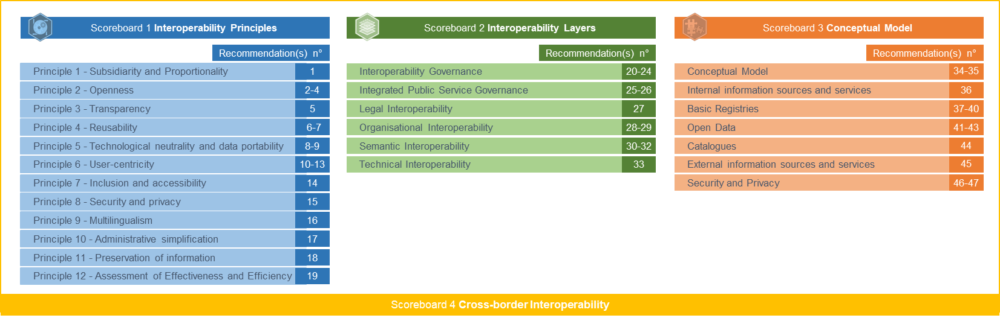

Table of Contents
Table of Contents
Digital Public Administration factsheet 2023
Italy
1 Interoperability State-of-Play 4
2 Digital Public Administration Political Communications 8
3 Digital Public Administration Legislation 18
4 Digital Public Administration Infrastructure 25
5 Digital Public Administration Governance 34
6 Cross-border Digital Public Administration Services for Citizens and Businesses 38

1
Interoperability State-of-Play
1
Country
Profile
In 2017, the European Commission published the European Interoperability Framework (EIF) to give specific guidance on how to set up interoperable digital public services through a set of 47 recommendations divided in three pillars. The EIF Monitoring Mechanism (MM) was built on these pillars to evaluate the level of implementation of the framework within the Member States. Whereas during the previous, the MM relied upon three scoreboards, the 2022 edition includes an additional scoreboard on cross-border interoperability, assessing the level of implementation of 35 Recommendations. The mechanism is based on a set of 91 Key Performance Indicators (KPIs) clustered within the four scoreboards (Principles, Layers, Conceptual model and Cross-border interoperability), outlined below.

Source: European Interoperability Framework Monitoring Mechanism 2022
Each scoreboard breaks down the results into thematic areas (i.e. principles). The thematic areas are evaluated on a scale from one to four, where one means a lower level of implementation and four means a higher level of implementation. The graphs below show the result of the EIF MM data collection exercise for Italy in 2022, comparing it with the EU average as well as the performance of the country in 2021.
Source: European Interoperability Framework Monitoring Mechanism 2022
Italy shows a good performance in the implementation of the recommendations related to Scoreboard 1. Particularly, Italy scores as high as the EU average in almost all the principles. Moreover, compared to its performance in 2021, the country improved its performance in Principle 3 – Transparency and Principle 12 - Assessment of Effectiveness and Efficiency. Nevertheless, Italy can further improve the implementation of the recommendations associated with these principles as it scores still below the EU average. Particularly, additional efforts could be aimed to ensure internal visibility and provide external interfaces for European public services (Recommendation 5) and to evaluate the effectiveness and efficiency of different interoperability solutions and technological options considering user needs, proportionality and balance between costs and benefits (Recommendation 19). Concerning Principle 6 - User-centricity, it is worth noting that Italy shows a decrease of the performance compared to the previous year. Such reduction will need to be further monitored with the results of 2023.
Source: European Interoperability Framework Monitoring Mechanism 2022
The Italian results for the implementation of the recommendations related to the interoperability layers assessed for Scoreboard 2 show an overall high performance, scoring 4, and at the European average, in all the layers. While already reporting a high performance in the interoperability governance layer, Italy has margins for further improvement in relation to ensuring a holistic governance of interoperability activities across administrative levels and sectors. (Recommendation 20).
Source: European Interoperability Framework Monitoring Mechanism 2022
The performance of Italy concerning the Conceptual Model in Scoreboard 3 shows an overall good score in the implementation of all the seven indicators. Particularly, Italy scores higher than the EU average in External information sources and services as well as Security and Privacy. On the other hand, Italy has margins for improvement in relation to three indicators the Conceptual model and Catalogues. In this regard, the Italian score could be further improved by putting in place catalogues of public services, public data, and interoperability solutions and use common models for describing them. (Recommendation 44) and, particularly, by deciding on a common scheme for interconnecting loosely coupled service components and put in place and maintain the necessary infrastructure for establishing and maintaining European public services (Recommendation 35) where Italy has still a lower performance.
Source: European Interoperability Framework Monitoring Mechanism 2022
The Italian performance concerning Cross-border Interoperability in Scoreboard 4 show an at least upper-middle performance of the country in 15 indicators. Italy has a high performance in several principles (i.e. e.g. Openness, Reusability and Technological neutrality and data portability – Cross border) as well as in the implementation of several cross boarder indicators (i.e. technical and semantic interoperability). However, Italy has still margin for improvement in the implementation of several recommendations. For instance, efforts could focus on providing a single point of contact in order to hide internal administrative complexity and facilitate users’ access to European public services (i.e. Recommendation 11) and on simplifying processes and using digital channels whenever appropriate for the delivery of European public services, to respond promptly and with high quality to users’ requests and reduce the administrative burden on public administrations, businesses and citizens. (i.e. Recommendation 17).
Additional information on Italy’s results on the EIF Monitoring Mechanism is available online through interactive dashboards.
Curious about the state-of-play on digital public administrations in this country? Please find here some relevant indicators and resources on this topic: |

2
Digital Public Administration Political Communications
Digital Italy 2026
In 2021 a new plan called ‘Digital Italy 2026’ (Italia Digitale 2026) was issued. The Digital Italy 2026 hinges on two intervention areas included in the National Recovery and Resilience Plan (NRRP) under ‘Mission 1: Digitalisation, Innovation, Competitiveness, Culture and Tourism’:
The two measures are made up of eight investments and a total budget for Digital Italy 2026 amounting to EUR 13.45 billion.
In order to implement this ambitious plan, Digital Italy 2026 focuses on five main objectives that are consistent with the EU strategy 2030 Digital Compass targets:
Objectives | Digital Italy 2026 | Digital Compass 2030 |
1) Digital Identity | 70% of population using digital identity | 80% of EU population |
2) Digital Skills | 70% of population reaching digital literacy | 80% of EU population |
3) Cloud and Digital Infrastructure | 75% of public administrations using cloud services | 75% of EU enterprises |
4) Digital Online Services | 80% of essential public services online
| 100% of essential public services |
5)Ultrafast Connectivity | 100% of families (in collaboration with Ministero delle Imprese e del Made in Italy – MIMIT)
| 100% of EU families |
Objective 1: Digital Identity and Citizenship
The digital transition of public administrations from cloud to data interoperability is accompanied by measures that aim at improving citizens’ life through better public services. The following measures will be put in place by 2026:
Objective 2: Digital Skills
The digitalisation of public services and infrastructures is reinforced by measures promoting the development of citizens’ digital skills and ensuring solid and pervasive digital literacy. More traditional investments in education programmes, platforms and infrastructure that cover the entire educational cycles of citizens are foreseen. Beside those, the Digital Civil Service (youth volunteering programme) and the Digital Facilitation Services will allow three million citizens to develop basic digital skills, therefore bridging the digital divide.
Objective 3: Cloud and Infrastructure
The digital transition of public administration follows a cloud-first approach that is oriented toward the migration of single administrations’ data and software in a cloud environment. This process will consolidate and rationalise many existing data centres, starting from those that do not fulfil the minimum safety, reliability and efficiency requirements (95% of the 11 000 data centres used by public administrations). Two alternative models are envisaged for central administrations: i) migration toward the National Strategic Pole (Polo Strategico Nazionale – PSN) with a new strategic cloud infrastructure, hybrid or private; or ii) migration toward the public cloud of a certified market operator. In addition, Italy will put in place a programme supporting and incentivising the migration of local public administrations to the cloud.
Objective 4: Digital Online Services
At the basis of public administration digitalisation lies the architecture and interconnection of administrations’ databases, which contribute to save time and resources for citizens and enterprises. The full interoperability of public administrations’ databases will extend the use of digital identity and digital domicile. The National Digital Data Platform (PDND) will allow for the creation of a unique digital profile, following the Once-Only-principle, and will guarantee the interoperability of public sector information through a central catalogue of Application Programming Interfaces (APIs) shared across central and local administrations. Public and private entities will be able to use the published APIs (eServices) in an authorised and certified way, in compliance with EU privacy laws. These eServices will enable the harmonisation with other EU countries of the service procedures prioritised by the Single Digital Gateway Directive. Semantic and syntactic interoperability of the eServices will be supported by the National Data Catalogue for Semantic Interoperability (NDC).
Objective 5: Ultrafast Networks
To comply with the Gigabit society’s promise of high-quality fixed and mobile connectivity infrastructures, a technology-neutral approach will be adopted. Therefore, Italy plans to put in place the following:
Three-Year Plan for IT in the Public Administration
The Three-Year Plan for IT in the Public Administration was defined in accordance with the Digital Growth Strategy, with the aim of setting public sector ICT investment targets in line with government guidelines and European goals and programmes. The plan proposes a systematic, distributed and shared management and use model applicable to the most innovative digital technologies. This approach is to be characterised by an agile and evolutionary management style, based on clear governance of all levels of public administration. The synergy and balance between the three pillars (innovative technologies, agile management style and clear and effective model of governance) ensure the country can benefit more effectively from new technologies and can provide citizens with an advantage in terms of easy access and improved digital services. The Agency for Digital Italy (Agenzia per l’Italia Digitale - AgID) oversees the plan and coordinates the support to central and local public administration bodies in the implementation of the plan.
In October 2021, the Department for Digital Transformation (DTD) and AgID published a new version of the Three-Year Plan for IT in the Public Administration (2021-2023). The new plan, which represents the natural evolution of the previous three plans, is an important instrument to foster digital transformation in the country, particularly when considering the digitalisation of public administration. The fourth plan will focus on the implementation of the actions outlined in the previous plans, while monitoring the results that have been achieved to date. Additionally, the updated plan puts forward some new elements related to the NRRP and the supervision of the digital transformation targets for the public administration at all levels. The plan has three main objectives:
 In January 2023, the DTD and AgID published an updated version of the Three-Year Plan for IT in the Public Administration (2022-2024). This new version of the plan further integrates the NRRP within the objectives of the plan, recognising the unprecedented opportunity to foster the digital transformation of the Italian public administration. For instance, the updated plan refers to the targets and streams of action as well as the investments set by the NRRP.
In January 2023, the DTD and AgID published an updated version of the Three-Year Plan for IT in the Public Administration (2022-2024). This new version of the plan further integrates the NRRP within the objectives of the plan, recognising the unprecedented opportunity to foster the digital transformation of the Italian public administration. For instance, the updated plan refers to the targets and streams of action as well as the investments set by the NRRP.
Cloud Strategy
In September 2021, together with the National Agency for Cybersecurity, the DTD published the Italian Cloud Strategy (Cloud Italia), which sets out the path for public administrations, including local ones, to move to the cloud. The target is for 75% of Italian public administrations to migrate to the cloud by 2026.
Promoting the adoption of secure, efficient, sustainable and reliable data processing infrastructures, the strategy aims to overcome a long-standing weakness of the Italian public administration. At the core of the approach lies the identification of risks associated to different public data and service types and the most suitable cloud delivery modes (public, hybrid or private) to mitigate those risks.
The strategy is structured along the following lines:
Berlin Declaration on Digital Society and the Value-based Digital Government
In December 2020, the Italian government signed the Berlin Declaration on Digital Society and the Value-based Digital Government, thus reaffirming its commitment – together with other EU Member States – to foster digital transformation in order to allow citizens and businesses to harness the benefits and opportunities offered by modern digital technologies. The declaration aims to contribute to a value-based digital transformation by addressing and strengthening digital participation and digital inclusion in European societies.
IT National Interoperability Framework
In 2021, Italy published the new IT National Interoperability Framework. The new framework aims to promote the creation of new user-centric, mobile first, digital public services based on secure and interoperable REST APIs. The goal is achieved by addressing both technological and organisational issues, especially those related to data-sharing hurdles between agencies.
Accordingly, with Decision No. 547/2021, AgID adopted and published the ‘Guidelines on Technical Interoperability of the Public Administration' as well as the ‘Technologies and Standards Guidelines for Interoperability Security through the APIs of IT Systems’, pursuant to Article 71 of the Digital Administration Code (CAD) and to Directive (EU) 2015/1535. The guidelines contribute to the definition of the ’Interoperability Model for the Public Administration’ (Modello di Interoperabilità della Pubblica Amministrazione - ModI), defined by AgID pursuant to Article 73 (3a), letter b of the CAD, in line with the new European Interoperability Framework. The first document focuses on technologies and how they are used to ensure secure digital transactions between and towards public administration bodies that use application programming interfaces via an IT connection network. The second identifies the technologies and standards that the public administration must take into account when creating their IT systems, in order to allow data and IT coordination between central, regional and local administrations, as well as between national and Union systems and with the managers of public services and private entities. To facilitate the creation of cross-border digital services, Italy worked in close connection with global standard-defining organisations - such as the Internet Engineering Task Force - and with other European Member States and the European Commission to identify and define standards supporting the creation of innovative digital services.
Fifth National Action Plan for Open Government
In February 2022, Italy published an updated Action Plan for Open Government, which outlines nine commitments that were identified by the public administration and civil society as priorities during the co-creation process. These commitments focus on: (i) developing an open government strategy and governance structure; (ii) promoting integrity and preventing corruption; (iii) strengthening civil society participation; (iv) promoting engagement with women and young people; and (v) enabling digital innovation.
While the thematic areas developed in the previous action plans remain relevant (e.g., networks for integrity and transparency, support for whistle-blowers and open standards), the new areas do not directly stem from the commitments of the fourth action plan.
 Design guidelines for public administration websites and digital services
Design guidelines for public administration websites and digital services
In July 2022, the DTD published the Design Guidelines and Manual (Linee guida e manuale operativo di design). The guidelines describe all the features to be included when creating websites and digital services for the public sector, the optional requirements as well as those requiring careful evaluation. In addition, the guidelines contain references to information transparency and security, the integration of enabling platforms, licences and good service monitoring practices. With the aim of fostering digital adoption within the society, the guidelines focus on the importance of creating websites and digital services that are useful and easy to use, following a user-centred design methodology.
Furthermore, an evaluation app has been created to support the public administration when designing and developing their webpages. The app is an automated tool to help verify the correct adherence to the design models for municipalities and schools. It helps to evaluate the quality of the website and the compliance with the criteria of measure 1.4.1 of the NRRP (‘Citizen experience in digital public services’), both during and after development. The design models enable the creation of institutional websites and digital services already validated by research and designed responding to the needs of citizens. The available templates include ready-to-use guides and resources to help developers get their job done quickly and cost-effectively.
Initiatives under the National Recovery and Resilience Plan (NRRP)
The NRRP aims, among other objectives, to foster the adoption of the digital identity, ensuring that it will be used by 70% of the population by 2026. In this regard, SPID and the CIE are the digital identity solutions within the national key infrastructures. The former is under the responsibility of the DTD, whereas the Ministry of the Interior has entrusted the management of the latter to the State Mint and Polygraphic Institute.
The DTD has published guidelines to support administrations in the implementation of SPID and the CIE for access to public services. The DTD launched an awareness-raising campaign for the local administrations and offered communications tools and resources.
Cybersecurity in the NRRP
Digitalisation increases the vulnerability of society that may face the risk of multiple cyber threats, such as frauds, blackmailing and terroristic attacks.
Decree No. 131 of 30 July 2020 concerning the provisions on the National Cybersecurity Perimeter (PNSC) was published in the Official Gazette No. 261 of 21 October 2020 and entered into force on 5 November 2020. It includes four national measures to reinforce the implementation of the PNSC:
No political communication has been adopted in this field to date.
 eProcurement
eProcurementNational eProcurement System
The new national eProcurement system aims at drawing a roadmap that takes into account the high degree of complexity of the new public eProcurement system, the provisions of the new Procurement Code and the NRRP targets. The system relies on a legal framework composed of:
In particular, the reform of the Procurement Code goes in the direction of a complete digitization of the public contract cycle, defining new fully digital processes and a set of enabling digital infrastructural platforms and services, to which all eProcurement platforms will have to adapt.
By the end of 2023, the dedicated working group is planning to set the technical infrastructure in line with the new legal context, allowing to manage all procurement steps digitally and to adapt the eProcurement platforms of central purchasing bodies/contracting stations progressively. Moreover, the group is assessing the cultural impact of the reform. The renewal of the processes and technological infrastructure is expected to be accompanied by an upskilling and training activity for the contracting authorities. The topic of the upskilling and competencies of those involved in the eProcurement process is also under the scrutiny of the Italian Regulator for the qualification of the contracting authorities. The forthcoming reform of the Procurement Code also promotes the use of available purchasing and negotiation tools and enables only qualified contracting authorities to make purchases above a certain amount, thus pursuing a strategy of cost containment.
Connected School
The ‘Connected School’ project aims at complementing the initiative started in 2020, whose goal was to provide free internet connection for five years (fibre optic with at least 1 Gbit/s symmetric speed) to approximately 35 000 schools (out of a total of 40 000) with maintenance and assistance services. The total planned investment is over EUR 400 million. With reference to the NRRP, the Connected Schools measure aims to complete the above-mentioned initiative, by providing the remaining 10 000 school buildings throughout the country with free 1 Gbit/s symmetric connectivity as well as technical assistance, management, and maintenance services for six years.
As of 31 July 2022, 14 695 schools were connected. The timely update on the progress of the plan is available on a platform, displaying an interactive map where citizens can locate the targeted schools and their connection status. The information is updated on a monthly basis.
Connected Health
The ‘Connected Health’ plan aims to equip approximately 12 300 healthcare facilities across the country with ultra-broadband symmetric connectivity of at least 1 Gbit/s and up to 10 Gbit/s. The total budget for the initiative is EUR 501 million. The new network will consist of active and passive elements (including dark fibre and active equipment). Once connected to the new network infrastructures, healthcare facilities will benefit from ultra-broadband connectivity services, technical assistance as well as management and maintenance services. Healthcare facilities will also receive the terminal equipment (modem/router) needed to connect to the network. The measure will be implemented through direct investment models. The new network will be fully financed and owned by the State and will be managed by one or more operators who will be selected on the basis of a competitive, open, transparent and non-discriminatory selection process.
Guidelines on the Acquisition and Reuse of Software for Public Administration Bodies
Articles 68 and 69 of CAD provide for the acquisition of software by public administration and establish the obligation to release the software developed or commissioned with an open licence.
The Guidelines for Software Acquisition and Reuse implement the provisions of Articles 68 – Comparative Analysis of Solutions – and 69 – Reuse of Solutions and Open Standards – of the Digital Administration Code, and in accordance with Article 71 on Technical Rules.
The purpose of the document is to facilitate public administration bodies in the acquisition and reuse of software through the open-source paradigm.
In line with the provisions of memorandum No. 63/2013, and the Three-Year Plan for IT in the Public Administration, AgID provides a catalogue of source code repositories (archives), which brings together open-source applications that could be used by all public administration bodies and the community of developers working for them. This catalogue is publicly accessible for the benefit of all citizens, companies and administrations as a sub-section of developers.italia.it.
The guidelines are also based on the three-year plan, which includes the following strategic objectives:
 Artificial Intelligence (AI)
Artificial Intelligence (AI)Strategic Programme on Artificial Intelligence
The Strategic Programme on Artificial Intelligence 2022-2024 aims to substantially upgrade the Italian strategy on AI, leveraging on key strengths of the national ecosystem while addressing the main areas for improvement. Priority areas and intervention policies of the strategy are:
National Strategy on Blockchain and Distributed Ledger
The National Strategy on Blockchain and Distributed Ledger is under development and its adoption is scheduled by the end of 2023 and the beginning of 2024. It aims to:
The Ministry for Industries and Made in Italy (MIMIT), which coordinates the strategy, launched the initiative ‘House of the Emerging Technologies’ (Casa delle Tecnologie Emergenti) to implement blockchain-based projects. The initiative recently financed a project for the SIAE (Italian Society of Authors and Publishers) aimed at using the blockchain for the enhancement of musical content and the protection of copyright. The project envisaged the creation of a decentralised register of rightsholders based on blockchain technology, thus allowing copyright holders to be uniquely identified globally.
Following an agreement with the International Audiovisual Market (MIA), MIMIT organised several workshops aimed at understanding and raising the audio-visual industry’s awareness on blockchain and, in particular, on Non-fungible Tokens (NFT). MIMIT intends to raise awareness on the possible threats and opportunities related to the use of NFTs, as well as explore the future of intellectual property and its regulatory implications. Finally, MIMIT is working on the preparation of calls for funding to support Italian enterprises in developing applications on the Metaverse, also based on blockchain infrastructures.
Blockchain4Italy
The initiative Blockchain4Italy supports the development and dissemination of the European Blockchain Partnership (EBP) in Italy and contributes to the participation of Italian stakeholders in the European Blockchain Service Infrastructure (EBSI), specifically with a use case on diploma recognition. With the support of the University Politecnico di Milano, Infratel Italia has been tasked with the organization and delivery of an information course addressed to officials of the Italian public administration focusing on blockchain and distributed ledger technologies, the activities promoted by the European Commission on EBSI, and the work carried out by Italy in this area.
The team from Infratel Italia coordinated the activities related to the implementation and full operativity of the new EBSI node, which is now functional and updated according to the indications of the Directorate General for Information Technology (DIGIT) of the European Commission.
No political communication has been adopted in this field to date.
Italian Cloud Strategy
In September 2021, the DTD and the Agency for National Cybersecurity published the Italian Cloud Strategy. The document describes the strategic programme, the implementation, and the supervision of cloud technologies in the public administration. The strategy builds upon three main areas of intervention, namely: (i) the creation of a national infrastructure for the provision of cloud services that will be set up and operate without any influence from extra-EU public and private actors; (ii) a qualification process for public cloud providers and their services to ensure that the declared characteristics and service levels are in line with the necessary requirements of security, reliability and compliance with relevant national and EU regulations; and (iii) the development of a methodology for classifying data and services managed by public administrations, to allow them to be migrated to the most appropriate Cloud solution (PSN or qualified public Cloud).
No political communication has been adopted in this field to date.
Framework Partnership Agreement
At the end of 2022, MIMIT published a new call within the Framework Partnership Agreement (FPA) for developing a large-scale European initiative for a High-Performance Computing (HPC) ecosystem based on RISC-V. With a decree dating 16 December 2022, MIMIT earmarked EUR 43 million to co-finance the Italian enterprises qualifying in the transnational joint calls. As announced, 40% of the total funding is reserved for enterprises in the southern regions.
1G Italy Plan
The 1G Italy plan aims to provide about seven million street addresses with at least one Gbps download and 200 Mbps upload capacity under usual peak-time conditions, in compliance with the principle of technological neutrality. In particular, the measure, with a budget of approximately EUR 3.7 billion, aims at covering the real estate units that, according to the mapping exercise conducted, have not been covered by networks capable of providing at least 300 Mbps download speed under usual peak-time conditions.
The government, in compliance with the rules defined by the EU legislation on State aid, must ensure that public intervention is limited to market failure NGA areas, i.e., those where there are no infrastructures capable of reaching, in reasonable times, the connectivity performance of 300 Mbps download speed under usual peak-time conditions that is necessary to meet user needs, as defined in the strategy. Therefore, the government must ensure that public investments do not overlap with the private investment plans already envisaged by operators. The first step in defining the exact scope of intervention under the 1G Italy plan was updating the mapping exercise concerning the ultrabroadband fixed networks in grey and black areas as well as in the so called 2016 white areas. The outcome of the mapping was shared with the stakeholders as part of the public consultation in which the target areas, as well as the other characteristics of the measure, were precisely indicated, including the public intervention model.
In January 2022, the request for State aid was approved, and the tenders for the realisation of the networks were launched. The deadline for awarding the tender was 30 June 2022. After the award, the first households will start being connected according to the service requirements mentioned above.
 Small Islands Plan
Small Islands Plan
The Small Islands Plan (Piano Isole Minori) aims to implement optical backhaul in the small islands by laying submarine optical cables in the regions of Lazio, Puglia, Sicily, Tuscany and Sardinia, reaching a total of 21 islands which currently do not have any fibre connections. Optical backhaul will enable the development of ultrawideband, increase coverage of mobile radio networks while fostering the evolution to 5G services. The new network will be publicly owned and will ensure connection to the 21 islands currently without fibre connections on fair and non-discriminatory terms. The work is to be completed by 31 December 2023.
5G Italy Plan
The 5G Italy plan was designed to better address public initiatives aimed at the creation of networks able to provide innovative and high-performance mobile services. The plan is complementary and synergetic to the already-started national 5G networks development plan and to the coverage obligations of mobile radio operators, in compliance with the constraints imposed by the rules on State aid. The plan aims to encourage the development of 5G mobile networks to fully satisfy the needs for a mobile connectivity that can enable the multiple use cases envisaged by the ITU, related to three categories, namely: (i) enhanced Mobile BroadBand (eMBB); (ii) massive Machine Type Communication (m-MTC); and (iii) and Ultra-Reliable Low Latency Communication (URLLC).
To this end, the plan envisages two distinct and complementary lines of action: a) the implementation of fibre optic backhauling for mobile base stations that, based on the plans declared by the operators during the mapping stage, will not have fibre backhauling by 2026; b) the implementation of new network infrastructures providing mobile radio services with adequate performance to satisfy user needs in areas where, on the basis of the mapping exercise, the downlink speeds expected by 2026 is less than 30 Mbps under usual peak-time conditions.
No political communication has been adopted in this field to date.

3
Digital Public Administration Legislation
 Specific Legislation on Digital Public Administration
Specific Legislation on Digital Public AdministrationDecree No. 13/2023
The Governance and Simplification Decree (Decree No. 13/2023) introduces a new provision in the Code of Civil Procedure (Article 35, session 3, modifying Article 196 quarter). With effect from 1 March 2023, the electronic filing (eFiling) became mandatory for prosecutors and judges. Rulings and summary reports of registrars shall be filed via the telematic service portal.
 Law No. 79/2022
Law No. 79/2022
The Governance and Simplification Decree (Decree No. 36/2022), converted into Law No. 79/2022 on 9 June 2022, contributed to the completion of the civil service reform, providing important changes in the recruitment process.
On 30 June 2022, with a decree of the Minister for Public Administration, guidelines were issued for the definition of new professional profiles, listing skills necessary to support the digital and ecological transition of the PA. Furthermore, since 1 July 2022 the portal inPA (a single gateway for the recruitment of PA personnel aimed at citizens and Public Administrations) can be used by central public administrations and independent authorities for recruitment purposes. In November 2022, registration with inPA became mandatory to have access to temporary and permanent employment opportunities and the members of the examination boards for public competitions are identified through the portal. The portal will soon be extended to regional and local authorities. From 2023 on, the publication of notices shall only take place on the portal and on the institutional website of the administration that announces the competition.
Law No. 108/2021
The Governance and Simplification Decree (Decree No. 77/2021) converted into Law No. 108/2021 in July 2021 was issued in the context of the NRRP. It establishes the Delegation Management System (Sistema di Gestione delle Deleghe - SGD) for appointing proxies by subjects holding a digital identity with the aim to facilitate the overcoming of the digital divide among citizens. It also strengthens the system of databases of national interest and the exchange of information between them through interoperability. Furthermore, it introduces simplification measures regarding public data and authorisation procedures for the installation of electronic communication infrastructures and digital infrastructure of buildings.
Law No. 76/2020
According to the Simplification and Digital Innovation Decree (Decree No.76/2020), converted into Law No. 120/2020 in February 2021, all administrations are required to migrate from the various online authentication methods to the Public Digital Identity System (SPID) and the Electronic Identity Card (CIE). Therefore, administrations will no longer be able to issue or renew the old credentials. The credentials previously issued could be used until their natural expiration and no later than 30 September 2021.
Digital identification is equivalent to showing an identity document and is extended for access to the services of public concessionaires and State-owned companies.
Law No. 160/2019
Law No. 160/2019 aims at further supporting the Italian Digital Agenda by earmarking EUR 5 million for a two-year period between 2020 and 2021. Additionally, the law assigns to the Department of the Presidency of the Council of Ministers a new role in the identification, promotion and management of projects related to innovation technology and digital transformation. Lastly, the law foresees the development of a digital notifications’ platform. This platform shall be used by all public administration bodies.
The law (Article 1) also provides for the establishment of the Minister of Technological Innovation and Digital Transformation to which the President of the Council of Ministers delegates the task to spread technology use among citizens, businesses and public administrations.
Circular No. 3/2018
The Minister for Simplification and Public Administration issued Circular No. 3 of 1 October 2018 urging all public administrations to identify within their organisations a Director or Head of Unit who is responsible for the digital transition.
Decree No. 217/2017
The most recent reform of the CAD laid down the legal foundations for many of the services established in the Three-Year Plan for IT in the Public Administration.
Many online services are already being implemented, such as the Digital Citizenship or the Data and Analytics Framework (DAF), and even the service for the selection of citizens’ digital domicile.
The latest version of the code set forth important modifications, as for instance:
New Interoperability Guidelines for Public Administration Bodies
Circular No. 1 of 9 September 2020 defines the new interoperability guidelines for public administration bodies in line with the EIF model. The guidelines set the technical interoperability that all public administrations must comply with to ensure the interoperability of their systems with third parties and to foster the implementation of the national IT system of the public administration. Particularly, public administrations at all levels shall comply with these technical standards and use patterns and profiles foreseen by this new interoperability model.
Act No. 627/2021
Act No. 627/2021 sets out the ‘Guidelines on the technological infrastructure for the National Digital Data Platform for the interoperability of information systems and databases’ (Digital Administration Code, Article 50-ter). This act provides the technical and organisational framework to support a streamlined mechanism for sharing and using information between agencies providing new digital public services.
Decree No. 97/2016
Building on Decree No. 33 of 14 March 2013, Decree No. 97 of 25 May 2016 redefined the scope of the obligations and measures regarding transparency and the measures for publishing some specific types of information. It reduced the burden on public administration bodies by identifying the parties responsible for imposing penalties for violating the transparency obligations. The legislative decree also introduced the Freedom of Information Act (FOIA) which allows citizens to access public administration data and documents even if they have not been made publicly available.
Law No. 124/2015
Chapter V of Law No. 241 of 7 August 1990 on Administrative Procedure and Access to Administrative Documents provides for limited rights of access to administrative documents. Public bodies must respond to a request for administrative documents within 30 days. Information can be withheld when it relates to: (a) security, national defence and international relations; (b) monetary and foreign exchange policy; (c) public order, prevention and repression of crime; and (d) privacy of third parties. Appeals can be submitted to a regional administrative court, whose decisions can be appealed before the Council of State.
In 2015, Law No. 124 of 7 August 2015 simplified the administrative procedures for Italian public administration bodies and introduced new elements, such as the electronic ID card, and updated the regulation on transparency.
Decree No. 102/2015
Following the need to harmonise national legislation with Directive 2013/37/EU, Italy enacted Decree No. 102/2015. It defines, among other things, the new conditions for telematic access and reuse of data coming from public administration bodies. In addition, it set the standards for open data by default.
Delegation Management System Law
In 2017, the CAD was updated by Decree No. 217/2017. The amendments concerned numerous aspects of the previous regulation and in particular the part relating to the digital domicile and public mailing lists, with the aim of further facilitating the use of electronic communication systems. New provisions were also introduced to confer legal value to electronic documents.
Decree No. 82/2021
Decree No. 82 of 14 June 2021 on urgent measures on cybersecurity, definition of the national cybersecurity architecture and establishment of the National Cybersecurity Agency attributes the responsibility for the national cybersecurity policy to the President of the Council of Ministers, who enacts the National Cybersecurity Strategy under the advice of the Inter-ministerial Committee on Cybersecurity (Comitato interministeriale per la cybersicurezza). Furthermore, the decree establishes three bodies, namely the Inter-ministerial Committee on Cybersecurity, the Agency for National Cybersecurity and the Cybersecurity Centre.
Law No. 133/2019
Law No. 133/2019 on urgent measures concerning national cybersecurity aims at ensuring a high level of security of the information systems both of public entities and private organisations that provide essential public services. The identification of the entities concerned by the law has been delegated to a Decree of the President of the Council of Ministers upon proposal of the Inter-ministerial Committee on Cybersecurity to be issued within four months after the approval of the law.
Decree No. 194/2019
The Decree 194 of 8 August 2019 set out the rules implementing the Italian Computer Emergency Response Team (CSIRT), established by Legislative Decree 65/2018, transposing Directive (EU) 2016/1148 (NIS Directive).
Data Protection Code
In 2004, the Data Protection Code entered into force, replacing the previous Data Protection Law (law No. 675/1996), as well as several other legislative and regulatory provisions.
The code was further amended on 4 November 2010, and again in 2018. Decree No. 101/2018 harmonised the national regulation with the provisions of Regulation (EU) 2016/679 on the protection of natural persons with regard to the processing of personal data and on the free movement of such data. The Data Protection Commissioner (Garante della Privacy) oversees supervising and enforcing the application of the Data Protection Code. To simplify the complaint process, the Commissioner published a complaint form on its website.
Legislative Decree No. 91/2014
Decree No. 32/2010 transposes the European Directive (EC) 2007/2 establishing an Infrastructure for Spatial Information in the European Community (INSPIRE). The decree assigns the function of national metadata catalogue to the Italian National Directory of Geographic Data (Repertorio nazionale dei dati territoriali), set up by Decree No. 82/2005 of the Digital Administration Code. In 2014, Decree No. 91/2014 aligned the national legislation with the new parameters set by the European legislation.
National Registry of the Resident Population
The National Registry of the Resident Population (ANPR) was set up by the Digital Administration Code, Chapter V - Data of Public Administration and Network Services, Article 62. It defined the ANPR as a merger of the Index of National Registries (INA) and the Register of Italian Citizens Residing Abroad (AIRE). Regarding the use of personal data, the Digital Administration Code mandates that personal data be stored locally and aligned continuously with the ANPR. Furthermore, the ANPR also granted other public administration bodies and organisations access to its data for the purpose of providing services.
Land Registry
The Land Registry or the National Directory of Geographic Data (RNDT) is also prescribed for in Article 59 of the Digital Administration Code. It gathers geographic data held by public authorities at the national, regional and local level. Specifically, Article 59 establishes the technical rules for the gathering of spatial data to be implemented by public authorities. These rules apply to the establishment of spatial databases, documentation, usability and the exchange of data between central and local public administration bodies under the provisions of the Digital Administration Code.
Registry of Companies
The legal base for the Registry of Companies is Article 2188 of the Civil Code. The Registry has been fully operational since 19 February 1996, under Article 8 of Law No. 580 of 29 December 1993 on the Reorganisation of the Chambers of Commerce along with DPR 581/95, containing the special regulations for the implementation of the Registry’s activities.
Once-Only Principle
In Italy, the Once-Only principle was transposed into legislation through Decree No. 82 of 7 March 2005, i.e. the Digital Administration Code, Articles 50 and 58. Both articles state that public administration bodies need to cooperate with each other to obtain the required information, rather than acquiring it from citizens who are not obliged to provide the same information to the public administration more than once.
In addition, in compliance with the Once-Only principle, Italy is implementing the Single Digital Gateway (SDG) project. By the end of 2023, through a single access point citizens will be able to access information on existing national and European regulations on business, employment, education, health and taxation and will be able to complete 21 administrative procedures, as established by Regulation (EU) 2018/1724 in all EU countries entirely online. The project requires the interoperability between different public administrations and is funded by the NRRP.
Decree No. 148/2021
Decree No. 148 of 12 August 2021 sets out the digital procedures for public procurement and implements Article 44 of Legislative Decree No. 50/2016. The regulation provides the technical rules to define the methods and processes for digitalisation, including the description of flows, data schemes, and European standards of interoperability. It also provides the supervisory and control bodies foreseen for by the Public Procurement Code as defined by AgID with specific guidelines.
Legislative Decree No. 50/2016
Decree No. 50 of 18 April 2016 amended the previous Public Procurement Code and implemented Directives 2014/23/EU, 2014/24/EU and 2014/25/EU. The Public Procurement Code transposed Directive 2004/17/EC coordinating the procurement procedures of entities operating in the water, energy, transport and postal services sectors, as well as Directive 2004/18/EC on the coordination of procedures for the award of public works, public supply contracts and public service contracts.
Decision No. 36/2018 by AgID
Decision No. 36/2018 AgID of 12 February 2018 concernes the reorganisation of the second level of the web-domain ‘.gov.it’. Within the web domain .gov.it, third level-domains had been assigned only to the central administrations listed in Article 1 (3) of Law No. 196 of 31 December 2009. In February 2018, this list was amended, redefined and published in the Official Journal. Subsequently, in collaboration with the Ministry of Education and Merit (MIM) and the National Research Council (CNR), a roadmap was defined to assist the migration path of organisations such as schools (from gov.it to edu.it) and local authorities (from gov.it to .it). Within its first year of publication, and only six months after opening up the registration process to the domain edu.it, more than 4 000 schools had migrated to the domain edu.it.
Health Card System Legislation
During the fiscal year 2019, individuals were required to send data to the Health Card system for the purpose of processing the pre-filled tax return, pursuant to Article 3, Paragraphs 3 and 4 of Decree No. 175 of 21 November 2014. Fiscal data transmitted to the Health Card System could only be used by public administration bodies for the application of tax and customs provisions or for the monitoring of public and private health expenditure. The terms and scope of use of the data and the relative limits were defined, including time limits.
Decree-Law No. 135 of 14 December 2018, amended by Law No. 12 of 11 February 2019, provided that the provisions of Article 10(a) of Decree-Law No. 119 of 23 October 2018, also applies to persons who are not required to send data to the Health Card System, with reference to invoices for health services provided to natural persons. In January 2022, there were 57 million active cards.
The Ministry of Health and the Ministry of Innovation and Digital Transition identified a detailed roadmap and developed an action plan to design the new EHR (Electronic Health Record), implement new IT infrastructure at local and central level, support and drive change management, and device communication strategy for citizens, general practitioners and specialists.
The development of the central repository will allow interoperability among the 21 Italian regions, so that at least 85% of GPs can use the EHR, and all Italian regions will provide their citizens with clinical referrals by 2026. The development plan involves the following steps:
The NRRP allocated resources to strengthen the electronic health record (fascicolo sanitario elettronico), ensure its dissemination throughout the national territory and reinforce the New Health Information System, the infrastructure and tools allowing the monitoring of the Essential Levels of Assistance and planning of health services.
Legislative Decree No. 90/2014
Decree No. 90 of 14 June 2014 on Simplification and Administrative Transparency and Efficiency of the Courts introduced some important features regarding online civil proceedings and services via certified e-mail carried out by lawyers. By means of this decree, the electronic filing of documents during civil proceedings became mandatory. The decree also expanded and clarified the cases in which lawyers can serve judicial documents via certified e-mail.
No legislation has been adopted in this field to date.
Blockchain Legislation
Law No. 135 of 14 December 2018, amended by Law No. 12 of 11 February 2019, introduced into the Italian legislation the concepts of distributed ledger technology and smart contract. These definitions represent the first attempt made by the government to define and include blockchain within the Italian legislative framework. Additionally, the law could constitute the starting point for more extensive national regulation on blockchain technologies.
No legislation has been adopted in this field to date.
No legislation has been adopted in this field to date.
No legislation has been adopted in this field to date.
No legislation has been adopted in this field to date.
No legislation has been adopted in this field to date.
No legislation has been adopted in this field to date.

4
Digital Public Administration Infrastructure
 National platforms and applications
National platforms and applications Digital PA 2026
Digital PA 2026 (PA digitale 2026) is a web platform that allows Italian public administrations to apply for tenders and to manage all the projects financed by the NRRP. Moreover, the platform enables the DTD to monitor applications to tenders and to perform technical and formal controls on projects, even automatically. To this aim, Digital PA 2026 is connected to external databases, from which it can import data to carry out automated checks. Digital PA 2026 assists Italian Public Administrations in pursuing the target of 100% online provision of key public services by enabling them to have access to NPPR funding on digital transformation. Over 18 000 public administrations are registered to the platform (over 80% of the total), 26 public tenders have been published through the website, and 65 000 submissions have been collected by the platform.
Italian National Registry of the Resident Population
The National Registry of the Resident Population (ANPR) is a single national database designed to combine the demographic data of all Italian residents, including those living abroad (registered with the AIRE - Register of Italian Citizens Residing Abroad). In January 2022, the migration of all Italian municipalities into the Italian National Register Office for the Resident Population was completed. Citizens residing in one of 7 904 Italian municipalities, and all the Italian citizens living abroad and registered in the AIRE, can check and verify their personal data, and obtain self-certifications and certificates from the ANPR portal, free of charge. Moreover, starting in February 2022, citizens have been able to update their residence status directly on the ANPR portal.
As provided for in Article 60 of the Digital Administration Code (Codice dell'Amministrazione Digitale), starting in 2022, the National Registry Programme (Programma Anagrafi) interconnects every main national database registry and other relevant databases, in particular: the National Registry of Resident Population (Anagrafe Nazionale della Popolazione Residente), the Revenue Agency (Agenzia delle Entrate) and the National Institute for Social Security (INPS). Every public administration is now able to reuse or share data and documents that citizens have already supplied, through machine-to-machine communication, upon the user’s approval. The integration of databases and services creates the right ecosystem to ensure a virtuous data quality management cycle and implement the Once-Only principle.
In December 2022, the new portal of the ANPR was made available to the public, featuring new layout and functionalities with the objective of improving citizens’ digital experience. The new approach aims to offer citizens a dynamic search system to facilitate the use of content, streamline navigation on the portal and promote easy-to-understand communication, through simple language. The portal now displays a list of frequently asked questions (FAQ) supporting citizens in the use of digital registry services. Moreover, the services that allow municipalities to manage (i.e. send, share, store) data relating to the electoral position of their citizens have also been made available in the ANPR. Once completed by all municipalities, citizens will be able to use the services in ANPR also for consulting their electoral position, for the digital release of the certification relating to the enjoyment of the active electorate and for any rectification requests.
eGovernment Portal for Businesses
The eGovernment Portal for Businesses was launched in March 2005. It provides a single-entry point to information and online services for businesses and entrepreneurs. Users can gain access to all information and services provided online by the central government, regions, provinces, and municipalities exceeding 25 000 inhabitants, as well as by several other entities including mountain authorities, local health authorities and chambers of commerce. Access to forms and services online is provided for three thematic areas: companies and public administration, company development, innovation and training.
A specific section of the portal also allows for personalised access to a virtual desk of integrated services, i.e. services provided by different authorities but relating to a unique goal for the user. Access to the integrated services section requires the use of the National Services Card (CNS), or a smart card whose characteristics comply with the specifications of the CNS, allowing for simplified procedures as well as for a unique transmission of common data and the coordinated communication of the procedure outcome.
eGovernment Employment Portal
The eGovernment Employment Portal ‘Cliclavoro’ went live on 22 October 2010. It was the new portal of the Ministry of Labour and Social Policies, designed to promote and improve the intermediation between labour supply and demand and the interaction among business, education, training and social policies systems.
Its main objective was to ensure that all operators of the Italian employment system have a simple and immediate access to a comprehensive catalogue providing detailed employment information and services, available in a shared and collaborative information system.
Designers Italia
Designers Italia is a national innovation project launched in June 2017 by the Digital Transformation Team and AgID. Designers Italia is the platform for the creation and design of digital public services and aims at fostering a user-centred design culture within the public sector. Designers Italia contributes to distribute, support and update the legal framework that mandates user-centricity approaches. In December 2021, it launched the upgrade of public front-end libraries to improve usability, consistency, technology and accessibility with both internal resources and third-party support. In the same period, it launched the upgrade of two website and digital services templates for municipalities.
It also provides local and central authorities with working tools to enable them to create and implement inclusive and user-centric digital tools:
Docs Italia
Docs Italia is a tool for publishing technical and administrative documents, offering citizens the possibility to read and comment in a simple and accessible way.
InPA
InPA is a free database in which users can find the references to communicate with public administrations and managers of public services.
National Digital Data Platform (PDND)
The National Digital Data Platform (Piattaforma Digitale Nazionale Dati - PDND) is a central catalogue of application programming interfaces (APIs) shared across central and local administrations for the interoperability between base registries.
Public and private entities can use the published APIs (e-services) in an authorised and certified way and in compliance with EU privacy laws. Semantic and syntactic interoperability of the e-services are supported by the National Data Catalogue for Semantic Interoperability (NDC). The PDND has been available online since June 2022. After an initial period when the platform was open only to municipalities, in December 2022 regions and autonomous provinces started contributing to the PDND by registering to the central access point to request resources for digital transformation (Digital Public Administration 2026). Therefore, regions and autonomous provinces can now make their data available to other administrations through the publication of new APIs in the PDND catalogue.
Currently, 139 organisations have already joined the PDND, including eight central administrations, 115 local administrations and 16 Public Service Managing Authorities.
The project started in the second quarter of 2021 and is expected to run until the second quarter of 2026. The project has a budget of EUR 20 million for the development of the platform, and EUR 526 million for the promotion of the interoperability services of the main public administrations both at central level (through bilateral agreements on specific needs) and local level (through dedicated calls for expression of interest). Bilateral agreements have been signed with some public administrations: INPS, DG-MOT (National Department of Motor Vehicles), ANAC (National anti-corruption Authority), MUR (Ministry of University and Research), Unioncamere (Italian Union of Chambers of Commerce).
 Design Models Evaluation App
Design Models Evaluation App
With the objective of supporting national and local public administrations to design and develop their webpages, the DTD released an evaluation app. The app is an automated tool to help verify adherence to the design models for municipalities and schools. It helps to evaluate the quality of the website and the compliance with the criteria of measure 1.4.1 of the NRRP “Citizen experience in digital public services”. The design models allow to create institutional websites and digital services already validated by research and designed based on the needs of citizens. The templates provided include ready-to-use guides and resources to help developers get their job done quickly and cost-effectively.
The design models comply with national guidelines and digital design best practices; they include the key features outlined in the eGovernment Benchmark Method Paper 2020-2023 in terms of user centricity and transparency.
The app is an open-source software based on Lighthouse technology and is available for Windows, MacOS and Linux. It enables website evaluation both locally (for example, a development environment) and online (publicly available).
Community Network Emilia Romagna
The Community Network Emilia-Romagna (CN-ER) is the organisational and governance structure for all local authorities in Emilia-Romagna to reach the different goals included in the Regional Digital Agenda. It is also the common reference point for all local PAs to reach common digital transformation goals. It aims at improving the effectiveness of local administrations via an updated use of IT, while also making sure citizens and enterprises in the Region Emilia-Romagna have the necessary skills to use digital services and infrastructures.
The Thematic Communities were set up in March 2017 with the objective of creating digital and open administrations as envisaged by Law No. 124/2015, reforming the Public Administration. The communities focus on:
SPC Network
Italian central administration bodies are connected through an IP national network (SPC Network) implemented via multi-provider services. All involved network operators share the same price list for all the network services defined by AgID and all the operators involved in the scope of this network share a dedicated peering point.
Despite being mandatory only for central administration bodies, the SPC is currently used by several local administration bodies that voluntarily decided to connect to the network.
Trans European Services for Telematics between Administrations
Italy uses the Trans European Services for Telematics between Administrations (TESTA) network as the main cross-border infrastructure to communicate digitally among the EU agencies, institutions and Member States.
eGovernment Open Data Portal
Dati.gov.it (eGovernment Open Data Portal) is the national open data catalogue of Italian public administrations. It was created in 2011 with the aim of aggregating in a single portal most of the open data exposed by the various local and national administrations. The eGovernment Open Data Portal is the benchmark for open data in the Italian public administration. It contains links and descriptions for about 150 public databases made available by public administration bodies. The data are available to any citizen intending to use them to develop applications for analysis or study purposes, in a complete, quick and accessible format.
Technical Infrastructure for Application Cooperation Among Regional Authorities
The development of online administrative services at regional and provincial levels in Italy means that digital information is stored and formatted in various ways. The ICAR project set up and tested a technical infrastructure for application cooperation among Italian regional authorities, using national standards defined for the development of the Public Connectivity and Cooperation System (SPC).
SPID – Public Digital Identity System
The Public Digital Identity System 'SPID' is the solution that allows users to access all online public administration services with a single digital identity (username and password) that can be used from computers, tablets and smartphones.
The use of SPID was extended to natural persons acting on behalf of legal entities, making it possible to replicate the effect of an authenticated signature.
SPID is rapidly evolving and AgID is currently working on different regulations to increase the involvement of the private sector either through the introduction of special entities called ‘aggregators’ or through the introduction of so-called ‘attribute authorities’, which would release qualified attributes to citizens and professionals authenticated with the SPID.
Soon, minors will also be able to obtain SPID identities, so a considerable increase in the number of identities issued is expected.
The introduction of the OpenID Connect technology to complement the SAML (Security Assertion Markup Language) technology currently in use will reduce the burden to authenticate people requesting SPID. As for eIDs, the dissemination of electronic identity cards made it possible to initiate the process of eID notification, pursuant to Article 9 of the eIDAS Regulation, which was fully implemented in the first half of 2019.
As reported by the platform, in March 2023 there were 34 811 241 SPID identities, 12 active digital identity providers, 14 064 active administrations and 155 private entities.
CIE - Electronic ID Card
The Electronic ID Card (Carta Identità Elettronica - CIE) is an identification card managed by the Ministry of Interior. In April 2023 there were almost 35 million identity cards, delivered in more than 90% of the Italian territory, and 6 250 public (central/local) administrations providing online access to services through the CIE. To overcome issues arising from the digital and generational divide, the Italian government is working on a Delegation Platform, allowing natural persons to operate on behalf of other natural or legal persons. At the moment, only the National Social Insurance Agency has implemented a delegation system.
National Services Card
In order to enable citizens to securely access eGovernment services even before the widespread dissemination of electronic ID cards, the Italian government developed the National Services Card (CNS). It is a smart card that allows for the secured identification of citizens online. The only difference between this card and the eID card is that the former lacks additional security elements, such as the laser band, holograms, etc. Therefore, it does not constitute a proof of identity or a travel document. The card is used to sign electronic documents due to its flexibility in administration to-citizen (A2C) services, both at national and local level.
ePass - Electronic Passport
Since 2009, Italy has been gradually entering phase II of the implementation of European Union’s Council Regulation (EC) No. 2252/2004 of 13 December 2004, on standards for security features and biometrics in passports and travel documents issued by Member States. Besides containing the holder’s facial image, the current version of the passport also contains fingerprints.
IO
IO is a single channel through which all local and national authorities (municipalities, regions, central agencies) offer services to citizens on their smartphones. The IO app relies on integration with the so-called ‘enabling platforms’ (most notably SPID the Italian eID). Since its debut in stores in April 2020, the number of downloads has grown to more than 26 million, and about 7 000 national and local authorities have integrated more than 77 000 new services into the app.
The Innovative Procurement Portal was created in line with the provisions of action line 75, Chapter 10 of the 2019-2021 Three-Year Plan for Information Technology in the Public Administration, with the aim of promoting the use of innovative contracts, supporting Italian public administration bodies in carrying out procurement procedures, and matching
the supply and demand of innovative solutions. It does so by encouraging effective collaboration between public administration bodies, companies and research institutions, in line with the provisions of the Italian Digital Agenda.
The portal offers a wide selection of procedures set up by the Italian public administration, also within the framework of national programmes, and is designed to accommodate the entire path of innovation, from the emergence of needs to the implementation of purchases. In addition, it aims to bring together the regional Open Innovation Platforms, the cluster portals, and the associations representing businesses with the aim of creating a network that lays the ground for innovation, making it effective and structural.
eProcurement Forum
The eProcurement Forum, established jointly by the AgID and the Ministry of Economy and Finance, has the task of creating a space suitable for carrying out consultation, proposal and monitoring activities within the scope of eProcurement.
The following activities are assigned to the forum:
Acquistinretepa Portal
The Acquistinretepa Portal was developed and is managed by Consip (a joint stock company of the Ministry of Economy and Finance), which in the year 2000 was tasked by the Ministry of Economy to develop an eProcurement system and tools on behalf of all public administration bodies. Consip’s mission is to develop and manage innovative ICT projects for the Ministry of Economy and Finance and to support the Italian Public Administration in the development and use of electronic procurement tools.
The portal is a fully functional eProcurement platform aimed at improving public procurement efficiency. The platform facilitates the use of the main tools for public eProcurement, namely framework agreements, online auctions, dynamic purchasing systems and an electronic marketplace (MEPA). Furthermore, the platform provides all kinds of information on eProcurement activities, demo and training sessions both to buyers and sellers, as well as an eCatalogue through which direct orders or requests for quotation to all or part of the registered and qualified suppliers are issued.
Green Procurement Website
‘Green Procurement’ is the national website of the European project ‘Buy Smart’, funded by the European programme ‘Intelligent Energy Europe’, which provides free consulting and information material on green procurement. The portal is managed by the Italian National Agency for New Technologies, Energy and Sustainable Economic Development (ENEA).
eInvoicing for Public Administration Bodies
Since March 2015, the use of eInvoicing in Italy has been mandatory for all public entities and public administration bodies have all shifted to the use of eInvoicing in public procurement. The interchange platform SID (Sistema di Interscambio Flussi Dati) is used to receive, check and forward eInvoices between public administration bodies. As of February 2023, more than 237 million eInvoices were managed by this system.
PagoPA
Decree No. 135 of 14 December 2018 established PagoPA, a State-owned NewCo, to manage the PagoPA system, the IO project and the Data Analytics Framework project.
PagoPA is the electronic payment system that allows citizens and businesses to choose how and with which Payment Service Provider (PSP) to pay taxes, duties and public services in a standardised way, both online and offline.
As of 7 January 2022, almost 39 million citizens and over two million enterprises have used PagoPA to make payments to around 18 000 public administrations that have actively joined the platform. On the same date, the connected Payment Service Providers (PSP) were approximately 450. The platform has experienced constant growth over the last five years, both in terms of transactions and payments value. From the second quarter of 2021 to the first quarter of 2022, PagoPA handled over 150 million successful transactions for a value exceeding EUR 30 billion.
Syllabus on Digital Skills for the Public Administration
The Syllabus on Digital skills for the Public Administration is a self-assessment tool available to public employees to assess their level of digital knowledge and skills such as data and information management, cybersecurity, online services, and emerging technologies.
European Platforms
The European Single Market drives the needs for more cross-border exchange of data. In addition to initiatives at European level, Member States sometimes cooperate to foster cross-border coordination. Italy is a member of EUCARIS, ECRIS and is pending membership for EULIS. Furthermore, Italy also participates in ECRN - CORDIS (digital transmission of the European civic records). The activities involved in such cross-border interoperability can be exemplified through the processes carried out within EUCARIS. Italy is providing vehicle and driving licence information based on the EUCARIS Treaty.
eIDAS Beta Version
The eIDAS Regulation is the legal basis for electronic interactions between businesses, citizens and public authorities, improving the security and efficiency of online services and eBusiness transactions in the European Union. With the Login with eIDAS button, the Italian node enables the cross-border interoperability of digital identities (eID). Its implementation fosters the circularity of Italian eIDs among EU Member States.
Base Registries of National Interest
According to the Three-Year Plan 2021-2023, 16 base registries out of the 20 of recognised national interest will be interconnected through fully interoperable APIs, semantically compliant with national and European ontologies and controlled vocabularies. In accordance with commitments made in the NRRP, by 2026 all the existing base registries of national interest - 20 to date - will be interconnected.
Italian Public Registry
According to the Three-Year Plan, Italy implemented controlled vocabularies and a metadata plan for Base Registries. For the time being, the existing Base Registries are the following:
No particular infrastructure in this field has been reported to date.
Italian Blockchain Service Infrastructure
In 2022, the blockchain market in Italy grew by about 50% compared to 2021 with almost 42 million investments. Italy is part of the European Blockchain Partnership and, in this context, works to implement new use cases through the Blockchain4Italy project in various sectors such as fashion, textile industry, creative industry, education, audio-visual and gaming. The initiative aims to concretely support the development and circulation of the European Blockchain Partnership (EBP) in Italy and to contribute to the participation of Italian stakeholders in the European Blockchain Service Infrastructure (EBSI).
No particular infrastructure in this field has been reported to date.
National Strategic Pole
In compliance with the provisions of Article 35 of Decree No. 76 of 16 July 2020, Italy is developing a high-reliable infrastructure, the National Strategic Pole (PSN), to consolidate the Data Processing Centres (DPCs) and the related IT systems. The infrastructure is intended for use by all public administrations. The objective of the PSN is to host the critical and strategic data and services of all central administrations (about 200), local health authorities, and the main local administrations (regions, metropolitan cities, municipalities with more than 250 000 inhabitants).
The PSN aims at accelerating the digital transformation of public administrations and aims to bring 75% of Italian administrations to use cloud services by 2026. The NRRP provides funding for central administrations, health agencies, and major local administrations to migrate data and services to the National Strategic Pole. The PSN is one of the three pillars of the Cloud Italia Strategy, together with the classification of public data and services by the Agency for National Cybersecurity (ACN) and the migration to the cloud of data and services of the public administration.
On 21 December 2022, the DTD formalized the creation of the infrastructure through the award agreement stipulated with the company Polo Strategico Nazionale S.p.A., owned by TIM, Leonardo, the development bank ‘Cassa Depositi e Prestiti’ (through the subsidiary CDP Equity) and SOGEI. This represented a crucial step for the deployment of a highly-reliable cloud infrastructure that will host the Italian public administrations’ critical and strategic data and services. To date, at least 280 Central Public Administrations and ASL have already migrated to PSN. The migration to PSN can be executed in different ways depending on the state of art of on-premises software’s IT architecture owned by each migrating public administration. These strategies can vary from pure hosting and lift-and-shift migrations for not cloud-ready software to a migration to IaaS, PaaS and SaaS for cloud-ready software. The PSN shall offer to each migrating public administration all the migration strategies that are eligible to consider the target migration to the PSN achieved.
No particular infrastructure in this field has been reported to date.
No particular infrastructure in this field has been reported to date.
No particular infrastructure in this field has been reported to date.
No particular infrastructure in this field has been reported to date.

5
Digital Public Administration Governance
For more details on Italy’s responsible bodies for digital policy and interoperability, its main actors, as well as relevant digital initiatives, please visit the NIFO collection on Joinup.
 National
National Undersecretary for Technological Innovation
The Undersecretary for Technological Innovation, within the Prime Minister’s Office, oversees the coordination of eGovernment tasks at all levels of the Italian administration. It ensures consistency among digital innovation policies, while coordinating projects involving several administrations. The Undersecretary also acts as an observatory on the information society and the digital divide, monitoring the projects implemented by central and local administrations.
The Undersecretary together with the DTD is responsible for defining a whole-of-government strategy to modernise Italy, in line with the other EU Member States.
Department for Digital Transformation
Along with the Undersecretary, the Digital Transformation Department (DTD) is in charge of implementing the Italian digital strategy and has the same competences of the previous Innovation Technology Department. The DTD was created to support the Prime Minister in the promotion and coordination of government activities aimed at defining a uniform strategy for the digital transformation and modernisation of the country through digital technologies. The department has been in operation since September 2019.
The DTD supports the modernisation of the Italian public administration. The department promotes reform initiatives to enhance the efficiency and effectiveness of the public administration. Among the tasks of the DTD, there is also the coordination of different government and public administration stakeholders to manage existing and future digital programmes in an integrated manner, with an agile methodology and an open data approach. The DTD is structured in three offices: (i) the ‘Office for Technological Guidance’, which deals with the coordination and execution of digital transformation programs; (ii) the ‘Transformation Office’, which is the link between the central and local administration and is in charge of supporting the digital strategy implementation at local level, with a view to overcoming territorial disparity and monitoring the progress of the NRRP projects; and (iii) the ‘Office for Administrative Management’, which guarantees the orderly management of administrative obligations. The three offices are supported by the NRRP Mission Unit for the management, monitoring, control and reporting of milestones and targets.
Inter-ministerial Committee for the Digital Transition
Decree No. 22 of 1 March 2021 established the Inter-ministerial Committee for the Digital Transition (CiTD) within the Presidency of the Council of Ministers. The CiTD ensures the coordination and monitoring of the implementation of technological innovation and digital transition initiatives of the public administrations. The CiTD is chaired by the President of the Council of Ministers or by the Minister/Undersecretary for technological innovation and digital transition and is composed of the several permanent Ministers (e.g. public administration, economy and finance, justice, economic development, health) as well as other Ministers with competence in the matters covered by the provisions and the topics on the agenda. Furthermore, regional and local representatives can participate in the meetings of the CITD, when dealing with matters affecting the regions and provinces.
The initiatives of the public administrations supervised by the CiTD cover many area such as: technological innovation, implementation of the Italian and European digital agenda, Italian strategy for ultra-wide bandwidth, digitization of public administrations and businesses, digital transformation, growth and transition in the public and private sectors, access to online services, connectivity, tangible and intangible digital infrastructures, and national public data strategy.
The technical-administrative secretariat of the CiTD is set up within the DTD, which supports and coordinates the implementation of the resolutions of the Committee. The technical-administrative Secretariat is made up of experts highly competent in the study, support, development and management of technological and digital transformation processes.
Article 2 (4) of Decree No. 77 of 31 May 2021, converted with amendments into Law No. 108 of 29 July 2021, assigned the CiTD responsibilities on the implementation of NRRP-related interventions.
Agency for Digital Italy
The Agency for Digital Italy (Agenzia per l’Italia Digitale - AgID) coordinates actions in the field of information and communication technologies to promote innovation in support of public administration, ensuring the achievement of the Italian Digital Agenda objectives in line with the Digital Agenda for Europe.
The Agency was established by Decree No. 83, converted into Law No. 134/2012. Since 2019, it is under the supervision of the Minister for Technological Innovation and Digital Transition. AgID is the main body in charge of interoperability activities in Italy. It defines the technical rules and guidelines for seamless interoperability and application cooperation between the national information systems and those of the European Union.
Moreover, it ensures the technical uniformity of public information systems designed to deliver services to citizens and businesses, while providing consistent levels of quality and usability throughout the country, as well as their full integration at European level. It has published online guidelines for digital professionals and eLeadership skills.
PagoPA
PagoPA is a State-owned enterprise created for the purpose of disseminating digital services in Italy. The company is responsible for the development of the PagoPA National Payment System and the App IO.
SOGEI
Sogei is an information technology company fully owned by the Italian Ministry of Economy and Finance and is the in-house provider of the organisational model.
Italian Data Protection Authority
The Italian Data Protection Authority (Garante per la protezione dei dati personali) is an independent authority in charge of supervising and enforcing the application of the Data Protection Code. In an effort to simplify the complaints process, the Authority has published a complaint form on its website.
National Agency for Cybersecurity
The National Agency for Cybersecurity (Agenzia per la cybersicurezza nazionale) safeguards national interests in the field of cybersecurity, including cyberdefence. The agency was set up by Decree No. 82 of 14 June 2021 and has legal personality under public law. Moreover, the agency is endowed with regulatory, administrative, patrimonial, organisational, accounting and financial autonomy, within the limits set out by the decree.
The objective of the agency is to contribute to the implementation of common actions aimed to guarantee levels of cybersecurity and cyberresilience which can foster the country’s digital development. It also offers specific training courses for the development of the workforce in the cybersecurity sector and supports awareness-raising campaigns.
Within the agency, the Cybersecurity Centre supports the President of the Council of Ministers in the field of cybersecurity, more specifically in crisis prevention and preparedness and for the activation of alert procedures.
Inter-ministerial Committee on Cybersecurity
The Inter-ministerial Committee on Cybersecurity (Comitato interministeriale per la cybersicurezza) was set up by the Decree No. 82 of 14 June 2021. It advises, proposes and deliberates on cybersecurity policies, also for the purposes of protecting national security in cyberspace.
Department for Digital Transformation
The DTD oversees the coordination of eGovernment tasks at the regional and local levels of the Italian administration, by ensuring consistency in digital innovation policies while coordinating projects involving several administrations.
Regional Governments
Besides the common policies agreed at national level with the central government, Ministries and other regional governments, each Italian regional government has adopted a regional information society strategy, which almost invariably comprises a regional eGovernment action plan. Regional and local authorities are responsible for the implementation of regional and local eGovernment projects falling within their respective areas of competence.
National Association of Italian Municipalities
The National Association of Italian Municipalities (ANCI) represents Italian municipalities and provides them with technical and political support. In 1987, ANCI created the company Ancitel, focused on bringing innovation and modernisation to Italian municipalities and local authorities. Ancitel has become ANCI’s main service provider, supporting and promoting the introduction of new information and communication technologies in municipalities.
Established by Regional Law No. 11 of 2004, the Community Network Emilia-Romagna (CN-ER) is a central governance structure made of different entities, which is based on an agreement between municipalities and unions of municipalities. This central structure foresees a strong collaboration between the region, municipalities, and technical partners, as the in-house company Lepida, both in defining regional initiatives and programs and sharing ideas, competences, and experience.
It has established a central governance structure called ‘Tavolo permanente della CN-ER’, which gathers all the municipalities and the Trade Unions in a collaborative effort to identify the administrative procedures that present the most critical issues and formulate proposals.
Inside the CN-ER, different thematic communities are organised, in which the participating entities share knowledge, experience and skills in a collaborative process about both horizontal and vertical aspects of implementing the digital transition.

6
Cross-border Digital
Public Administration Services
Further to the information on national digital public services provided in the previous chapters, this final chapter presents an overview of the basic cross-border public services provided to citizens and businesses in other European countries. Your Europe is taken as reference, as it is the EU one-stop shop which aims to simplify the life of both citizens and businesses by avoiding unnecessary inconvenience and red tape in regard to ‘life and travel’, as well as ‘doing business’ abroad. In order to do so, Your Europe offers information on basic rights under EU law, but also on how these rights are implemented in each individual country (where information has been provided by the national authorities). Free email or telephone contact with EU assistance services, to get more personalised or detailed help and advice is also available.
Please note that, in most cases, the EU rights described in Your Europe apply to all EU member countries plus Iceland, Liechtenstein and Norway, and sometimes to Switzerland. Information on Your Europe is provided by the relevant departments of the European Commission and complemented by content provided by the authorities of every country it covers. As the website consists of two sections - one for citizens and one for businesses, both managed by DG Internal Market, Industry, Entrepreneurship and SMEs (DG GROW) - below the main groups of services for each section are listed.
For citizens, the following groups of services can be found on the website:
Regarding businesses, the groups of services on the website concern:
last update: June 2023
The Digital Public Administration Factsheets
The factsheets present an overview of the state and progress of Digital Public Administration and Interoperability within European countries.
The factsheets are published on the Joinup platform, which is a joint initiative by the Directorate General for Informatics (DG DIGIT) and the Directorate General for Communications Networks, Content & Technology (DG CONNECT). This factsheet received valuable contribution from the Department for Digital Transformation (DTD).
 The Digital Public Administration Factsheets are prepared for the European Commission by Wavestone
The Digital Public Administration Factsheets are prepared for the European Commission by Wavestone
An action supported by Interoperable Europe
The ISA² Programme has evolved into Interoperable Europe - the initiative of the European Commission for a reinforced interoperability policy.
The work of the European Commission and its partners in public administrations across Europe to enhance interoperability continues at full speed despite the end of the ISA2 programme. Indeed, enhanced interoperability will be necessary to unlock the potential of data use and reuse for improved public services, to enable cross-border collaboration, and to support the sector-specific policy goals set by the Commission for the future.
Interoperable Europe will lead the process of achieving these goals and creating a reinforced interoperability policy that will work for everyone. The initiative is supported by the Digital Europe Programme.

Follow us
Interoperable Europe

 @
@